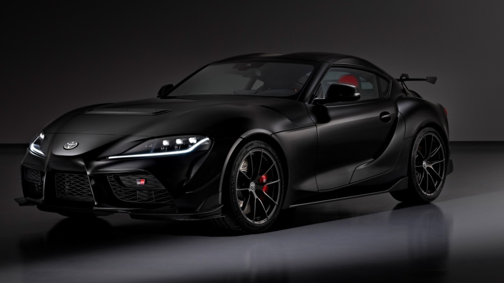

Web page created by Jackson Tonn

Editied by Jackson Tonn
Cars are a very interesting topic, and did you known that the first car ever made was in 1885?.
They still continue to this day and it is has been around 141 years until the Benz Patent-Motorwagen released.

Electric Cars use electricty to fuel their cars instead of the regular gas, oil or diesel.
It's very useful when you live in hot climates because the roofts of the cars are solar panel, so the constant sun radiating on your roof is a way to generate more energy and use less elcetricty.

Sport Cars are usually known to have dynamic performance in handling and driving experience.
Whether your looking for an everyday car or an track/rally car.Sports cars come in each option.
The BMW M4, is one of the many sport cars that has very good accleration, horsepower, and steering that's efficient in everyday use.

Muscle Cars are American designed cars that are known for a high performance in featuring a large and powerful v8 engines.
They are also rear-wheel drive and emphasis on straight-line speed like drag racing.
Their purpose is to dominate drag stripes and traffic light races rather than crusing around a track.
Exotic Cars are low production limitied to the audience with an high performance capability.
Some Exotic Cars include the Ferrari 296 GtS, Lamborghini Huracan and Porsche 911 GT3 Rs, that around 41,000 of these specific supercar generations exist globally.